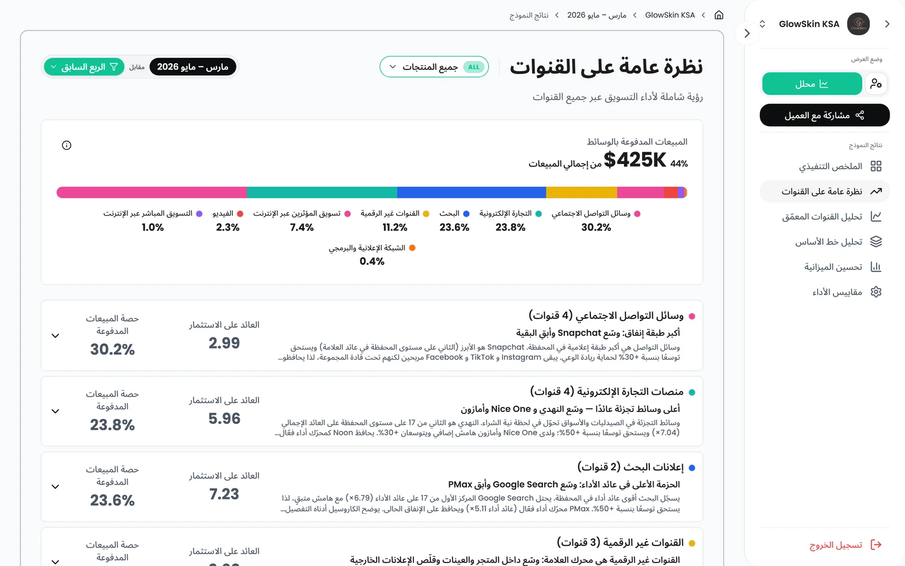
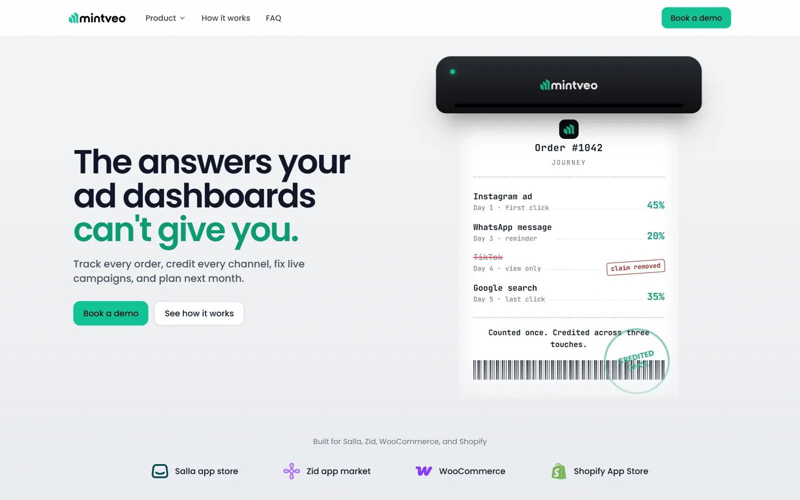
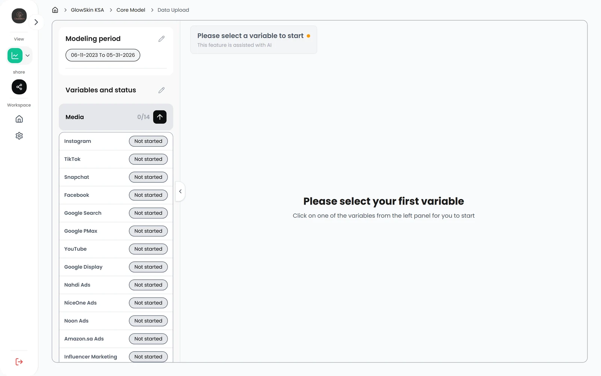
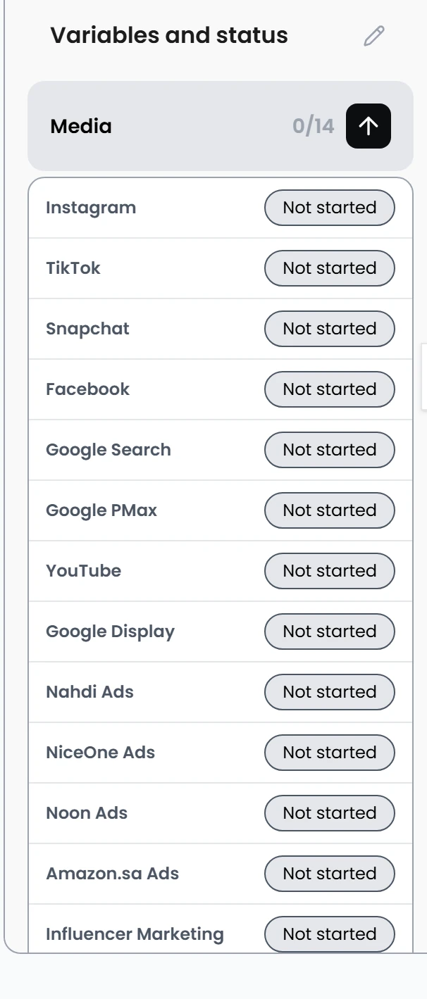
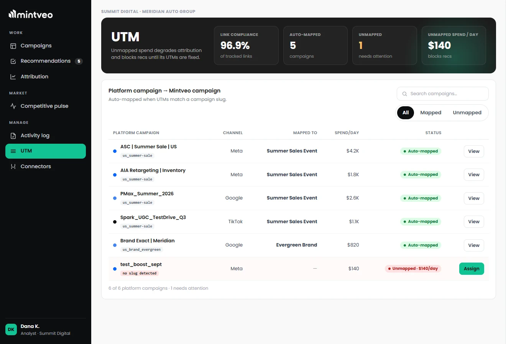
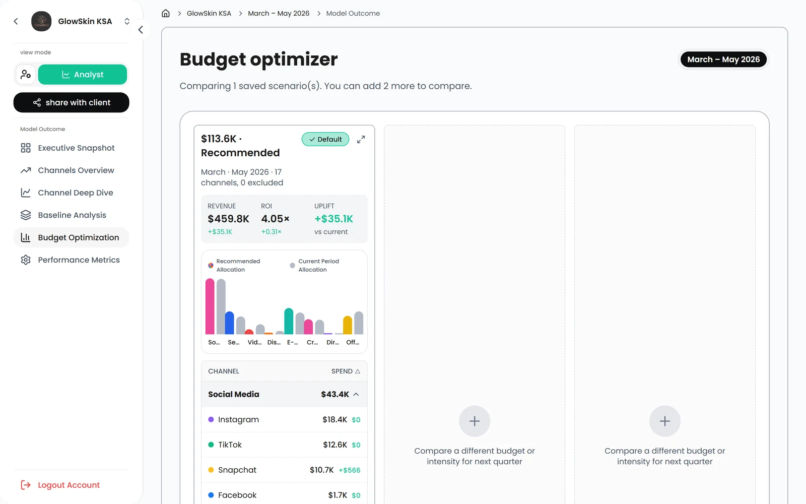

Mintveo · marketing analytics · case 2 of 3
Mintveo analytics
Companies spend heavily on ads but cannot tell which spend worked. As Mintveo's only designer, I shaped the brand, the system and 100+ screens that tell an analyst what to do next.
- My role
- Founding Product Designer, sole designer
- Team
- Me, 1 developer, 1 PO
- Timeline
- Since Oct 2025
- Status
- Pre-launch

In 30 seconds
- The problem
- Four ad platforms claim the same sale, so the next budget is set on numbers that cannot all be true.
- My role
- The only designer, from user story to released screen, with one PO and one developer.
- The key decision
- A ready-made dashboard that leads to a clear next step, instead of a builder where users arrange their own charts.
- Where it is
- Pre-launch, presented to agencies and brands. 100+ screens, 13 versions, English and Arabic.
Where it is
- 100+
- Screens designed, sole designer
- 10+
- Dashboards across 3 roles
- 13
- Versions shipped, each with a change report
- 2
- Languages, English and Arabic
No paying client yet, so this case is about scope and judgment, not performance numbers. The whole interface mirrors in Arabic, including channel names and numbers that keep their own direction.

English

Arabic
English

Arabic

The demo workspace uses a demo dataset, not a paying client's. Mintveo's second project, Campaign Enhancer, has its own case.
Evidence at a glance
- Status
- Pre-launch
- Team
- Sole designer, with one PO and one developer
- My role
- Brand, design system, 100+ screens and the marketing site
- What is validated
- Built and demoed with a demo dataset
- What is not measured
- Analyst usage and product results
What I found
Three roles, one platform
- Analyst: runs the model and decides the budget moves.
- Manager: oversees the workspace.
- Client: wants the outcome, not the machinery, so the client dashboard is its own screen.
What competitors do
In my audit of competing platforms, every one used the same plot for everything, screen after screen. The demo workspace is a Saudi retail brand with 17 channels, including Noon Ads, Amazon.sa Ads and WhatsApp as a paid channel.


Five decisions
A fixed dashboard, not a drag-and-drop builder
- My call
- One fixed layout we take responsibility for: best performing, at risk, sales and channel mix.
- Why
- Customisation hands our job to the user. Having an opinion is the product.

Executives get a verdict: Invest, Keep or Kill
- My call
- The executive screen ends in a decision per campaign, with the analyst view one click away to defend it.
- Why
- An executive wants the next move, not a chart.

Messy data checked in a conversation
- My call
- A chatbot reads the upload and raises the problems worst first, in plain language.
- Why
- A 200-row error list stops people before they reach the model.

Figma for the system, AI for fast iteration
- My call
- Brand, system and complex screens in Figma. Fast iteration with AI, after I taught it the design system.
- Why
- Without the system, AI output turns generic. With it, my time goes to user stories and review.


A chart per data type
- My call
- A different plot per data type, each one checked by the PO.
- Why
- Sameness reads as one endless chart. Variation gives the eye anchors.

Who did what
| Research and problem framing | Me, with the PO |
|---|---|
| Prioritisation | The PO |
| UI and flows | Me |
| Brand and design system | Me |
| Marketing site (mintveo.com) | Me |
| Build | One developer |